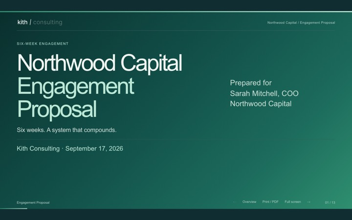
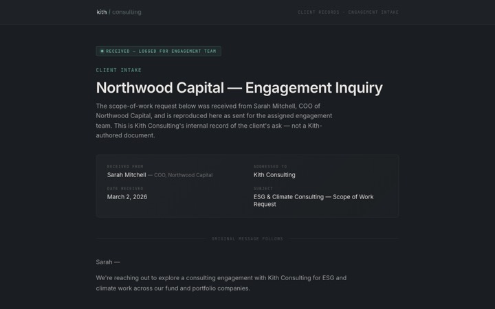

Week 1 of 6, Climate Work Residency
Inquiry and pitch
Northwood asked what a six-week, AI-native climate engagement would deliver, and which of its ten companies should come first.
Highlights

Engagement proposal: where the signal points (slide 4)
Shows how four companies were chosen from ten using two sourced lenses, not a made-up composite score.
Open (opens in a new tab)
The brief, as received
The words of Sarah Mitchell, Northwood's COO (fictional), on what she did not want (generic, one-off work) set the test every later week is judged against.
Open (opens in a new tab)The case
Northwood's COO wanted climate work tied to value creation, not generic reports that start from scratch each time. I read the inquiry back to her and answered it with a 13-slide proposal.
The proposal starts with four companies: Sterling, Clearview, Harvest Ridge and Meridian. It ties each week to a PE question: EBITDA (operating earnings) levers, deal risk and exit readiness, with Meridian's sale process as the urgent case. It prices the work at a fixed fee and says what Northwood keeps.
All deliverables
Each opens in a new tab, in the Kith Climate style it was delivered in.
- Engagement proposal (13 slides) (opens in a new tab)Our response: prioritisation, six-week plan, data needs, team approach and fee.
- Client inquiry (the brief, as received) (opens in a new tab)Northwood's scope-of-work request, reproduced as logged in Kith's client records.
How it was built
- I treated the inquiry as the brief and built the proposal around its three objectives: operational impact, a system that compounds, and an AI-native test case.
- Company priority uses two separate lenses (Northwood's own readiness status and sector-level SASB materiality, an industry standard for which sustainability issues matter financially) and shows them side by side. They are not blended into one score. Meridian is selected on exit timing, not sector pattern.
- The SASB links are labelled as the closest industry analogue (indicative), and the slide says where no signal was found.
- The pitch was reviewed later for public use. Two reviewing agents and a phone-width browser check found contradictions (cost wording against the fee slide, kickoff timing) and I had them corrected.
My part
- I chose the four companies to lead with, framed every week around a PE question (EBITDA, deal risk, exit readiness) and set the fixed-fee structure, with Claude drafting the pages.
The AI's part
- Claude Code drafted and built the proposal pages and the intake record from my direction.
- Review agents checked claims and consistency, and found the cost and timing contradictions.
Across the engagement
Into Week 2. The proposal promised a data audit in Week 2 for the four priority companies. Week 2 went further and covered all ten.